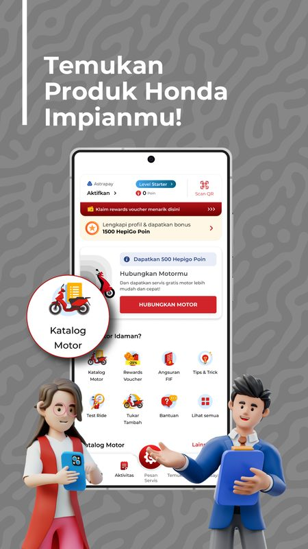
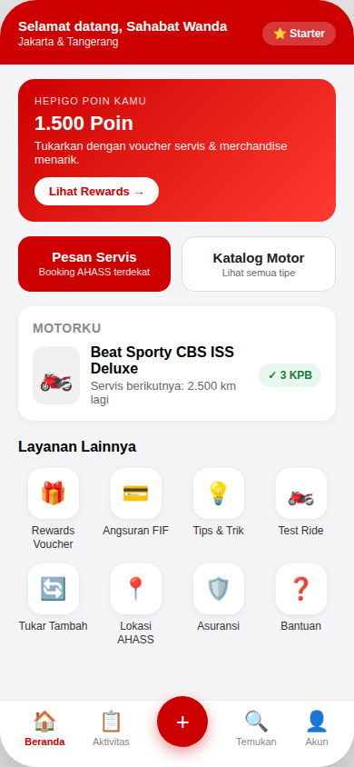
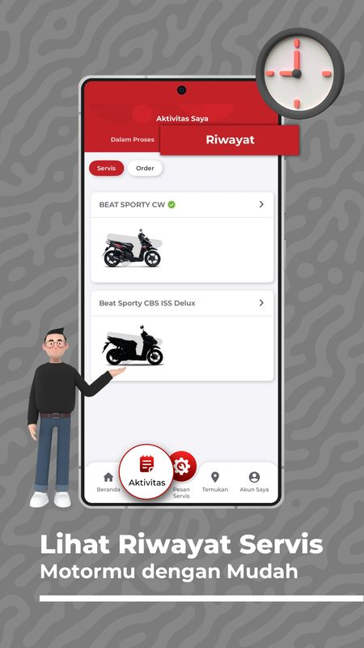
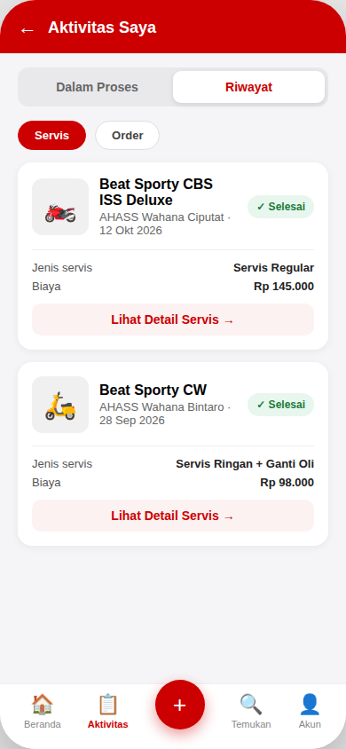
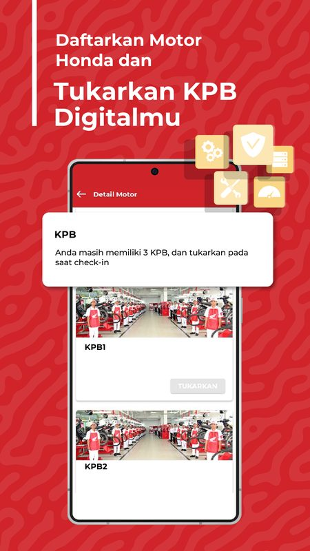
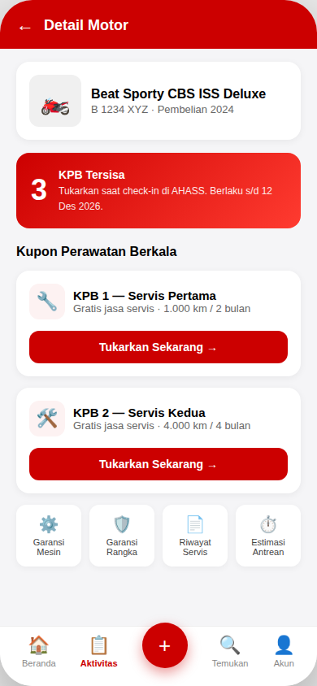

Independent UI/UX Case Study
Wahana Honda: Improving the Mobile Experience Through Heuristic Evaluation
A UX audit and conceptual redesign focused on service booking, information hierarchy, and usability.
01Background
Wahana Honda is an application for Honda motorcycle customers in the Jakarta and Tangerang areas. Its features include motorcycle information, AHASS service booking, digital KPB, service history, HepiGo loyalty points, and merchant promotions. The app brings several customer needs into one place. For this study, I focused on whether the home screen makes common tasks — especially booking a service and checking motorcycle-related information — easy to find.
Key question: Does the home screen help users identify their next action quickly, or do competing elements make that decision harder?
The original case study noted that the app had more than one million downloads on Google Play at the time the source was reviewed. This figure indicates reach, but does not by itself establish user satisfaction or prove which tasks are most common.
02Research Approach
This independent review used publicly available screenshots from the app's Google Play listing. I conducted a heuristic review of seven published screens: onboarding, home, service booking, digital KPB, service history, loyalty, and the closing screen. The review focused on four selected usability principles associated with Jakob Nielsen's heuristics:
- Visibility of system status
- Consistency and standards
- Aesthetic and minimalist design
- Error prevention
I also mapped the main tasks considered in this study: booking a service, checking remaining KPB benefits, and checking loyalty points. These are task hypotheses to guide the redesign, not a verified ranking of user needs.
03Key Findings
Home screen — High priority
Several elements compete for attention: promotional content, a profile-completion card, loyalty points, a motorcycle-linking card, and an eight-item menu grid. Some text appears small, and a circular badge appears to extend beyond the intended layout. This may make the screen harder to scan and can reduce the prominence of service booking.
Service history — Medium priority
Product names use inconsistent capitalization, and the selected-tab highlight appears to overlap the tab strip. These inconsistencies can make the interface feel less polished and may weaken visual clarity.
Digital KPB — Medium priority
A tooltip overlaps other content, while decorative icon elements appear crowded near the screen edge. The “TUKARKAN” action is also visually ambiguous in the reviewed screenshot.
Loyalty — Medium priority
Decorative elements and a prominent badge compete with the “Beri Rating” call to action. From the screenshot alone, the label may be interpreted as asking users to rate the app rather than perform an in-app loyalty action. This interpretation needs validation.
Service booking — Low priority
The form structure appears comparatively clear. The headline spans three lines with tight line spacing, so a small typographic adjustment may improve readability.
Onboarding and closing screen
These screens appear comparatively clean, with clear hierarchy and strong contrast. No major issue was identified in the reviewed screenshots.
04Problem Definition
Problem statement
Design challenge
How might the home screen prioritize common motorcycle-service tasks while preserving access to secondary features and the brand's existing identity?
Proto-persona (hypothesis)
“Budi,” a 32-year-old daily motorcycle rider, represents a potential user who opens the app to book a service or check KPB benefits. He values clear information and a direct route to the task. This proto-persona is based on assumptions, not interviews or validated user data.
Design objectives
- Make the “Pesan Servis” action easier to notice from the home screen.
- Reduce competition between promotional content.
- Bring key motorcycle information — such as the next service and remaining KPB — into a clearer summary.
- Improve text readability and prevent elements from overlapping.
- Preserve recognizable Wahana Honda visual branding.
The proposed “find the booking action within three seconds” target is a benchmark to test, not a result already achieved.
05Ideation & Prioritization
Priority 0 — Core task clarity
- Reduce the number of competing promotional banners on the home screen to one primary hero banner.
- Make “Pesan Servis” the primary, full-width call to action beneath the hero area.
- Combine motorcycle name, next service information, and remaining KPB into a “Motorku” summary card, where the relevant data is available.
Priority 1 — Readability and consistency
- Give the eight-item service grid more breathing room and keep labels legible.
- Remove badges or decorative elements that collide with layout boundaries.
- Standardize product-name capitalization and align tab indicators consistently.
Priority 2 — Contextual actions
Review the loyalty CTA label so it accurately describes the action available on that screen. “Klaim Poin” is only a possible alternative if it matches the actual function; the label should be confirmed against the product's real behavior.
Proposed home-screen flow
Open app → scan motorcycle status and points → tap “Pesan Servis” → select AHASS location → select a schedule → confirm booking. This describes the proposed task flow. The number of screens, taps, and time required should be confirmed against the actual app prototype before claiming a specific reduction.
06Design Decisions
The redesign preserves the existing red-and-white brand palette, bold headlines, rounded buttons, and bottom navigation. The main changes concern information order and emphasis rather than a full visual rebrand.
One primary action per screen Clear visual hierarchy Brand identity preserved Spacing & readability
Home screen
- Consolidate competing promotional content into one hero banner.
- Place “Pesan Servis” in a prominent position beneath the hero.
- Group motorcycle details and KPB status in a “Motorku” card.
- Retain the service grid while improving spacing and alignment.
- Remove elements that extend beyond the layout.


Service history
- Standardize product-name capitalization.
- Correct the tab indicator so it no longer overlaps the tab strip.
- Arrange status, cost, and detail actions in a more consistent structure.


Digital KPB
- Integrate the remaining-coupon information into the content layout instead of allowing a tooltip to obscure other elements.
- Make the exchange action more explicit with a label such as “Tukarkan Sekarang,” provided it accurately reflects the underlying function.
- Align benefit icons within the layout.


Design trade-offs to validate
Moving secondary promotions away from the home screen may reduce distraction, but could also make promotions less visible. Combining motorcycle information into one card may improve scanning, but the card should not become too dense. These trade-offs should be evaluated with users before implementation.
The “Before” screens are screenshots from the public Google Play listing reviewed for this study; the “After” screens are conceptual mockups created for portfolio purposes.
07Validation Plan
Because this study is based on a heuristic review, the proposed redesign still needs usability validation.
Proposed moderated usability test
Recruit five Honda motorcycle owners in Jakarta or Tangerang as an initial qualitative test. Ask participants to:
- Find and start the service-booking task from the home screen.
- Find the remaining KPB information.
- Find the action to redeem or use loyalty points.
Proposed measures
- Time to locate “Pesan Servis.”
- Task completion rate.
- Misclicks or incorrect selections.
- Participant comments about clarity and confidence.
The three-second target for locating the booking action and a 90% task-completion target are proposed benchmarks, not established standards or measured results. With five participants, the test can help uncover usability issues but cannot provide a statistically reliable estimate of overall user performance. If a suitable live or instrumented prototype and sufficient traffic are available, an A/B test could later compare the existing and redesigned home screens. Booking completion should be measured only if the event can be tracked consistently.
08Expected Impact & Next Steps
Expected impact
The redesign is intended to make the primary booking action easier to notice, improve access to motorcycle-related information, and create more consistent visual patterns across selected screens. These are expected benefits, not verified outcomes. Changes in booking conversion, retention, or overall satisfaction cannot be claimed until they are measured.
Next steps
- Test the three redesigned screens with representative users.
- Revise the design based on observed task failures and participant feedback.
- Define a small set of reusable typography, spacing, capitalization, and component rules.
- Revisit the loyalty screen and confirm CTA wording against the actual feature.
- If product analytics are available, define a baseline before evaluating changes in booking behavior.
Reflection
This study demonstrates how a structured interface review can translate visible usability concerns into design hypotheses and prioritized improvements. Its main limitation is the absence of direct user research and testing; validation is therefore the most important next step.